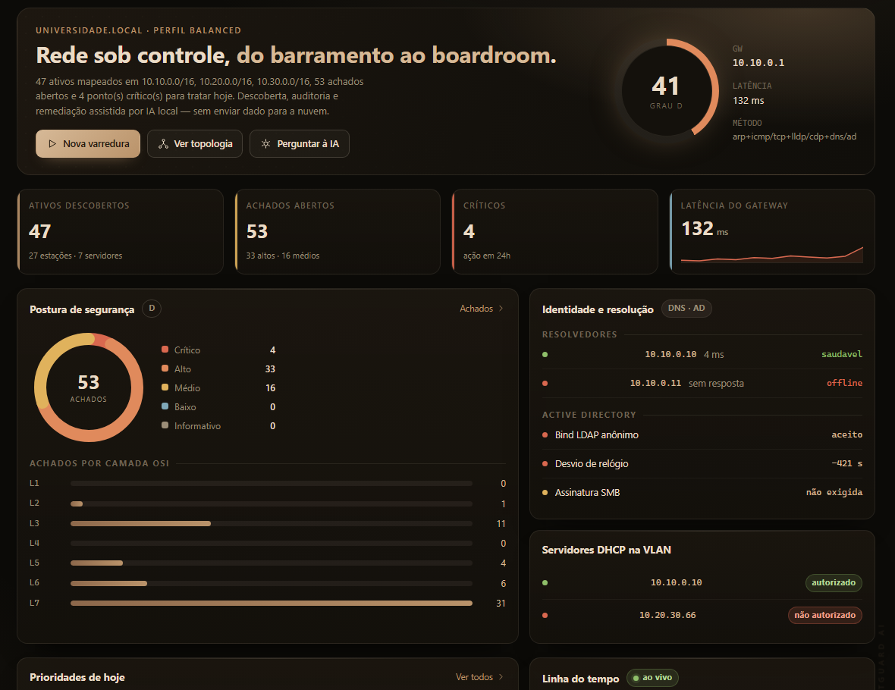

Inventário espalhado
Ativos em planilhas, VLANs sem dono e equipamentos que ninguém sabe que existem até pararem de responder.
Inteligência de rede · operação local
Descoberta, topologia, auditoria de postura e diagnóstico em um único painel. O NexIA Core transforma dados dispersos em decisões — sem enviar a sua rede para a nuvem.
Trial de 7 dias · Windows 10/11 · instalador de 28,9 MB

Feito para quem não pode parar
O problema
Em algum lugar entre a planilha, o switch e o chamado de “a internet caiu”, a sua equipe perde tempo tentando responder perguntas que deveriam estar na tela.
Ativos em planilhas, VLANs sem dono e equipamentos que ninguém sabe que existem até pararem de responder.
SMBv1, Telnet, RDP exposto, SNMP público. Configurações antigas continuam abertas porque ninguém tem tempo de olhar.
“É o DNS?”, “É o firewall?”, “É a operadora?”. Sem rota, gateway e saída testados, o incidente vira achismo.
A plataforma
Do primeiro pacote ao relatório executivo. O NexIA Core conecta descoberta, mapa, auditoria e diagnóstico em um fluxo só.
ARP, ICMP, DNS, SNMP e TCP para encontrar estações, servidores, impressoras e ativos de rede. Modo passivo ou ativo, com escopo explícito.
Topologia, inventário e identidade dos ativos. Gateway, servidores DNS, DHCP e domínio em uma visão que a equipe entende.
Postura de segurança baseada em evidências: serviços legados, exposição, TLS e configurações de risco — com recomendação e comando.
Gateway, DNS, TCP, HTTPS e traceroute. Descubra em segundos se o problema é local, de saída, de DNS ou de aplicação.
Recursos
Cada recurso existe para responder uma pergunta real de operação. Nada de dashboard bonito que não leva a uma ação.
Combinação de protocolos para não depender de um único sinal. O modo passivo observa sem gerar tráfego novo; o ativo vai além quando você autoriza.
Ver como funcionaSMBv1, Telnet, RDP, SNMP público, HTTP administrativo, TLS. Cada achado tem severidade, evidência e o comando para corrigir.
Analisa ativos e portas já descobertos. Sem exploit, força bruta, DoS, spoofing ou alteração de configuração.
Modelo local via Ollama, com fallback para regras. Sua topologia e seus achados não saem da máquina.
Relatórios executivos em PDF, CSV e JSON. Postura, achados, evidências e prioridades em linguagem que a gestão entende.
Trial de 7 dias e ativação offline com licença Ed25519. Sem servidor de licença, sem dependência de internet.
Falar sobre licenciamentoO produto
Dashboard, segurança e diagnóstico no mesmo lugar. Alterne entre as visões e veja o produto em operação.
Como funciona
Três passos. Sem agente em cada máquina, sem instalação de coletor externo, sem mudar a configuração da rede.
Solicitar orçamentoInforme a sub-rede, a janela e a autorização. O NexIA Core valida o limite, ignora adaptadores virtuais e escolhe o modo passivo por padrão.
Ativos, portas, serviços e postura. A IA local e o motor de regras transformam evidências em prioridades e recomendações.
Relatório em PDF, CSV ou JSON, com achados, severidade e comandos. A equipe aplica com janela e rollback — o NexIA Core não altera nada.
Topologia e inventário
Veja o que existe, onde está e como se conecta. O inventário reúne IP, MAC, fabricante, sistema, VLAN e fontes de descoberta — sem planilha paralela.
Assistente local
Pergunte em português: “o que é uma VLAN?”, “como corrigir SMBv1?”, “por que a internet caiu?”. O assistente usa o modelo local e o playbook do produto para responder com contexto — não com genérico.
Disable-WindowsOptionalFeature -Online -FeatureName smb1protocolDiagnóstico
Teste gateway, DNS, saída TCP e HTTPS em sequência. O diagnóstico classifica o ponto de falha e o traceroute mostra o caminho até o destino.
Segurança e limites
O NexIA Core foi desenhado para operar em redes reais, com regras claras. O padrão é não gerar tráfego novo, não alterar configuração e não explorar falhas.
Primeiro escuta. O modo ativo só entra com autorização explícita.
Máximo /22 por execução, com rejeição de redes amplas e adaptadores virtuais.
Nada de força bruta, DoS, spoofing ou alteração de configuração.
SQLite, API em 127.0.0.1 e relatórios na própria máquina.
Para quem é
Heterogênea, com legado, VLANs e pouca documentação. É aí que o NexIA Core faz diferença.
Inventário, postura e diagnóstico em um só lugar. A equipe chega ao problema com evidência, não com tentativa.
Múltiplas VLANs, filiais, impressoras e dispositivos legados. Relatórios que a gestão entende e a TI consegue executar.
Levantamento rápido, escopo controlado e relatório executivo para entregar ao cliente no mesmo dia.
Teste o produto em ambiente controlado, com escopo explícito e dados locais.
Licença assinada, vinculada à máquina e válida sem internet. Ideal para ambientes isolados.
Ficha técnica
ARP, ICMP, DNS, SNMP e TCP. IPv4, VLANs e sub-redes; modo passivo e ativo.
Serviços legados, exposição, TLS e configurações de risco, com severidade e evidência.
Modelo local via Ollama, com fallback determinístico por regras e playbooks.
Gateway, DNS, TCP, HTTPS, traceroute e classificação de falha de internet.
PDF executivo, CSV para análise e JSON para integração.
Windows 10/11, instalação por usuário, SQLite WAL, API local em 127.0.0.1.
Trial de 7 dias e ativação local assinada (Ed25519), sem validação online.
Até /22 por execução, 4.096 hosts e escopo sempre declarado.
Perguntas frequentes
Se a sua dúvida não estiver aqui, fale com a gente.
Falar com especialistaNão. A descoberta, a auditoria, a IA e a licença funcionam localmente. A internet só é necessária para baixar o instalador ou falar com o suporte.
Não. O produto é somente leitura: descobre, audita e recomenda. Nenhuma alteração é aplicada automaticamente; os comandos ficam com a equipe responsável.
Até /22 por execução, com limite de 4.096 hosts. Redes mais amplas são rejeitadas para evitar varreduras acidentais.
Um modelo local via Ollama, com fallback para regras e playbooks. A topologia, os achados e as perguntas não são enviados para a nuvem.
Trial de 7 dias e, depois, licença local assinada com Ed25519, vinculada à máquina. A ativação é offline: você importa o arquivo .lic.
Sim. O produto foi feito para redes heterogêneas, com VLANs, equipamentos antigos e pouca documentação. O escopo é declarado por sub-rede.
Próximo passo
Orçamento sob medida, escopo controlado e leitura dos primeiros achados. Sem instalar agente e sem compromisso.
Conte um pouco sobre a sua operação. Retornamos com uma proposta e uma agenda.
Solicitação recebida
Retornamos em até 1 dia útil com uma proposta e os próximos passos. Enquanto isso, você pode conhecer os recursos do produto.
Seu protocolo é o próprio e-mail de confirmação do Web3Forms.